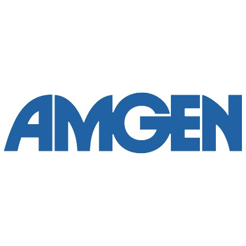

Postdoctoral Fellow at Berkeley Lab
2017 - Present
Heavy Element Chemistry Group, Chemical Sciences Division
Advisor: Prof. Rebecca J. Abergel
Research Focus: Chelation of actinides and other radionuclides for conjugation to monoclonal antibodies for imaging and targeted alpha therapy
DAAD Graduate Scholar at the Max Planck Institute for Chemical Energy Conversion
2013 - 2015
Department of Molecular Theory and Spectroscopy
Advisor: Prof. Dr. Serena DeBeer
Research Focus: Characterization of metalloenzyme active sites using advanced X-ray spectroscopy and synthetic model complexes
Graduate Research Assistant, Predoctoral Instructor at the University of Washington
2011 - 2016
Department of Chemistry
Advisor: Prof. Julie A. Kovacs
Research Focus: Synthesis and characterization of synthetic model complexes for metalloenzyme active sites

Undergraduate Intern at Amgen, Inc.
2008
Protein Sciences Department
Advisor: Dr. David P. Meininger
Research Focus: Purification and conjugation development of engineered monoclonal antibodies
Undergraduate Research Student at Goucher College
2008 - 2009
Department of Chemistry
Advisor: Prof. Scott P. Sibley
Research Focus: Synthesis of Pt-group quinoline derivatives and inhibition studies with amyloid-beta fibril formation